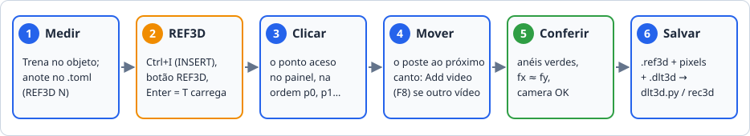
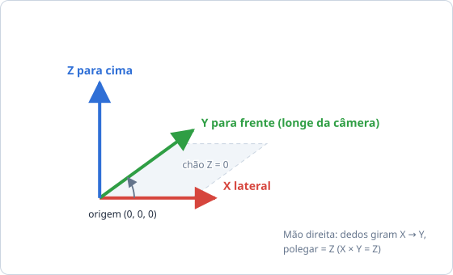
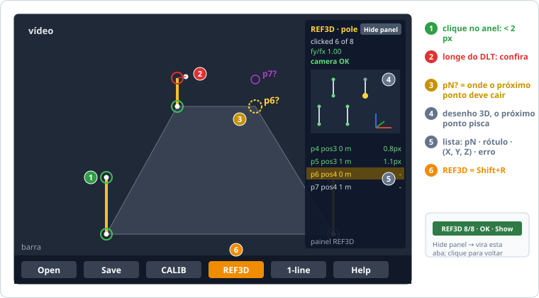
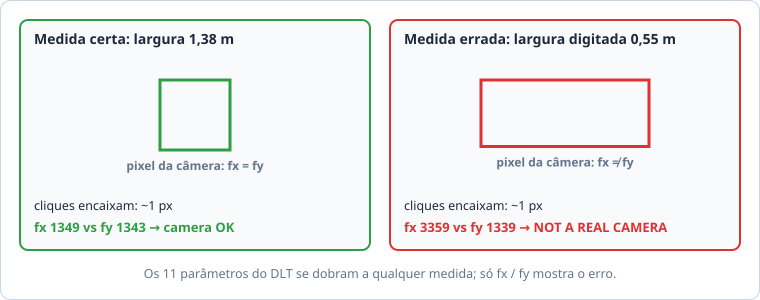

Guia de calibração REF3D (ilustrado)
Versão: 0.4.19 Data: 16 de novembro de 2026 Atualizado: 16 de novembro de 2026 Autores: Prof. Dr. Paulo R. P. Santiago, Rafael L. M. Monteiro Projeto: vailá - Multimodal Toolbox
Deixe esta página aberta ao lado do getpixelvideo enquanto calibra. Na janela, F1 (com o REF3D ligado) ou o botão Guide do painel REF3D abre esta página. Referência da ferramenta: REF3D builder; teclas: getpixelvideo.

1. O que se calibra
A calibração DLT3D liga a posição 3D de pontos conhecidos (metros, no .ref3d) aos seus pixels no vídeo. Com ela, o rec3d transforma os pixels de qualquer marcador em metros. São precisos pelo menos 6 pontos que não estejam todos num plano; use de 8 a 12, espalhados pelo volume onde o movimento acontece.
2. Os eixos e a origem

- Ponha a origem
(0, 0, 0)no chão, num canto que apareça em todos os vídeos. - X na largura, Y no comprimento (sentido da marcha ou da corrida), Z para cima. Unidade: metros.
- Trocar X com Y dá um sistema de mão esquerda: a reconstrução 3D sai espelhada.
3. Escolha o objeto (gabarito)
O botão REF3D monta a lista de pontos a partir das medidas do objeto. Os desenhos abaixo saem do mesmo código: os números p0, p1, … são a ordem em que o REF3D pede os cliques.

0, 1, posições rect 1.38 x 5: em cada canto, a marca de baixo e depois a de cima. Os cantos seguem 0,0 → X,0 → 0,Y → X,Y (setas tracejadas). O ponto laranja (p6) é o próximo, como no painel.
1.38 x 5 x 1: primeiro os cantos do chão (p0–p3), depois os de cima (p4–p7); em cada camada, Y e depois X. Marcas num eixo acrescentam os pontos das arestas.
0.5, Y 0.5, 1, Z 0.5, 1: origem, depois as marcas de X, de Y e de Z. Como o poste, pode ser movido sobre um retângulo.L carrega um .ref3d que você já tem (pontos de qualquer forma).
As medidas ficam num arquivo de template
Em vez de digitar as medidas na janela, escreva-as uma vez no ref3d_template.toml, ao lado dos vídeos de calibração (um arquivo serve para todos os vídeos calib_pos* da pasta). No primeiro diálogo do REF3D, N grava o arquivo com os três objetos (poste, caixa, triedro) e o abre no editor de texto; escolha o kind, preencha a seção do seu objeto e salve. Depois, REF3D + Enter: T é o padrão, e o diálogo mostra o que o arquivo contém (T = Template ref3d_template.toml: pole, marks 0, 1 m, 4 positions). Um erro de digitação numa chave ou valor aparece na mensagem ([pole] unknown key 'mark'). O poste da passarela:
O arquivo explica cada chave nos próprios comentários. Eixos: X lateral, Y à frente (afastando-se da câmera), Z para cima; a origem (0, 0, 0) é um ponto do chão. rect = [1.4, 5] coloca a haste em (0,0), (1.4,0), (0,5) e (1.4,5).
kind = "pole" # o objeto medido: "pole", "box" ou "triad"
[pole] # uma haste com marcas, apoiada no chão em várias posições
marks = [0, 0.25, 0.5, 0.75, 1] # alturas das marcas, a partir do chão (0), em metros
rect = [1.4, 5] # X = largura (lateral), Y = comprimento (à frente): 4 cantos no chão
# positions = [[0, 0], [1.4, 0], [0, 5]] # ou seus próprios pontos no chão (x, y), na ordem dos cliques
# Opcional: onde o objeto esteve em cada vídeo (só poste/triedro).
# [videos]
# "calib_pos1.mp4" = [0, 0]
# "calib_pos2.mp4" = [1.4, 0]N grava esse padrão mais completo (cinco marcas num retângulo 1,4 × 5 m). O desenho da passarela acima ainda mostra o caso curto marks 0, 1 / rect 1.38 x 5 (8 pontos): ajuste marks às alturas que você mediu.
Vários vídeos. Descomente [videos] com uma linha por clipe: nome do arquivo → canto [x, y] (tem de ser uma das posições acima). REF3D + T em cada vídeo manda os cliques para os pontos daquele canto (qualquer ordem). Sem isso, use a ordem da lista + Add video (F8). Só para poste e triedro.
As opções 1, 2, 3 (digitar as medidas em diálogos) continuam. Sem janela: python -m vaila.ref3d_builder --new-template ref3d_template.toml e depois --template-file ref3d_template.toml -o calib.ref3d.
4. Passo a passo no getpixelvideo
- Meça o objeto com a trena: largura e comprimento do retângulo, alturas das marcas do poste. Anote no
ref3d_template.toml(o REF3D N cria o arquivo; veja o template). Medida errada é o erro mais comum (seção 6). - Abra o primeiro vídeo de calibração. Aperte Ctrl+I (INSERT), depois o botão REF3D (ou Shift+R, ou a opção 4 do CALIB) e Enter: T carrega o template. (Ou 1 Caixa, 2 Poste, 3 Triedro para digitar as medidas, L para carregar um
.ref3d.) - Clique o ponto aceso no painel (laranja na lista, piscando no desenho 3D); a linha de informação da barra diz
click = pN rótulo (x, y, z). Depois o próximo, na ordem. - Ponto escondido neste vídeo? A deixa em branco e passa ao próximo. Clique errado? O botão direito remove o último; clicar numa linha da lista seleciona aquele ponto para recolocar.
- Mova o poste para o próximo canto. Se essa posição está em outro vídeo, aperte Add video (F8): os pontos já clicados vão junto e a lista continua.
- Confira os anéis e a câmera no painel (seções 5 e 6).
- Save (ou Esc): os pixels, o
.ref3de o.dlt3dsão gravados ao lado do vídeo (seção 8).
5. Como ler a tela

pN? mostra onde devem estar os pontos ainda não clicados: um bom guia para o próximo clique. Hide panel recolhe o painel numa aba pequena, que continua mostrando a contagem e o veredito.6. É uma câmera real?

| O painel diz | Significa | O que fazer |
|---|---|---|
| camera OK, anéis verdes | medidas e cliques concordam | Save |
| um anel vermelho | aquele clique está fora | selecione a linha e clique de novo |
| NOT A REAL CAMERA, anéis verdes | uma medida do objeto está errada, ou X e Y trocados | meça de novo; confira a ordem dos cantos |
| needs 6 / todos os pontos num plano | poucos pontos, ou todos no chão | acrescente pontos com altura (topo do poste, haste Z) |
7. Vários vídeos (uma posição por vídeo)
Dois jeitos:
[videos]no template (preferido): nomeie cada arquivo e o canto no chão; abra aquele vídeo, REF3D + T, clique só as marcas daquele canto.- Ordem da lista + F8: clique a pos1 no primeiro vídeo, Add video (F8), abra o próximo e continue a lista.
A câmera não pode se mexer entre os vídeos.
8. Arquivos e próximo passo
| Arquivo (ao lado do vídeo na tela) | Conteúdo |
|---|---|
<video>_markers_1_line.csv + .toml | os pixels de p0, p1, … e onde cada um foi clicado |
<video>_markers_1_line.ref3d | os pontos 3D, em metros |
ref3d_template.toml (pasta dos vídeos) | as medidas que você preenche; REF3D N gera, T carrega |
<video>_markers_1_line.template.toml | as medidas usadas, no mesmo formato (T carrega quando não há ref3d_template.toml) |
<video>_markers_1_line.dlt3d | os 11 coeficientes do DLT3D |
Depois use o .dlt3d no DLT/REC 2D-3D (rec3d), ou refaça-o a partir do par .csv + .ref3d com o dlt3d.py. Arquivos que já existiam são copiados antes para .vaila_markers_history/.
9. Erros comuns
- Medida digitada errada (0,55 em vez de 1,38): anéis verdes, câmera NOT REAL. Meça de novo.
- X e Y trocados, ou cantos clicados em outra ordem que 0,0 → X,0 → 0,Y → X,Y: siga o ponto aceso no painel.
- Todos os pontos no chão: não há calibração 3D. Use o topo do poste ou a haste Z.
- Menos de 6 pontos, ou exatamente 6: sem conferência. Use de 8 a 12.
- Ponto escondido clicado no chute: use A para deixá-lo em branco.
- Lente com muita distorção (grande angular): o DLT de 11 parâmetros não a modela; mantenha os pontos longe das bordas da imagem.
Os desenhos são esquemáticos (vista oblíqua fixa, não a vista da sua câmera). São feitos pelo bin/make_ref3d_guide_svgs.py a partir do vaila/ref3d_builder.py, então a ordem dos pontos é a mesma que a ferramenta usa.